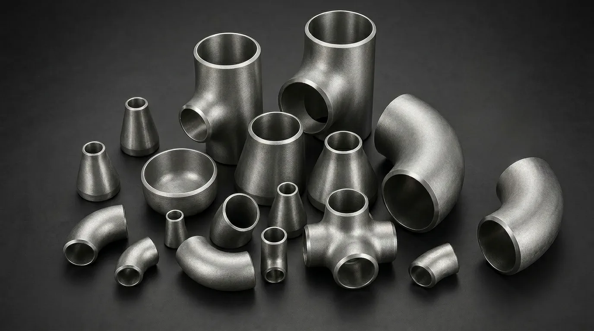

Gururaj Infradesigns supplies Alloy Steel Pipe Fittings in WP1, WP5, WP9, WP11, WP22, and WP91 grades including elbows, tees, reducers, caps, and stub ends for power plants, refineries, petrochemical, and high-temperature piping applications.
Gururaj Infradesigns is a trusted Alloy Steel Pipe Fittings Manufacturer in India, supplying high-performance piping components engineered for elevated temperatures, high-pressure systems, and demanding industrial environments. Alloy steel pipe fittings are widely used in power plants, refineries, petrochemical facilities, and process industries where superior mechanical strength, creep resistance, and thermal stability are essential.
As a leading Alloy Steel Pipe Fittings Supplier in India, we offer elbows, tees, reducers, pipe caps, stub ends, and crosses in various chromium-molybdenum alloy grades to meet the requirements of critical piping systems. These fittings are designed to provide long service life, reliable performance, and excellent resistance to heat and pressure in challenging operating conditions.

Alloy Steel Pipe Fittings are manufactured using chromium and molybdenum alloy steels that provide improved strength, oxidation resistance, and elevated-temperature performance compared to conventional carbon steel materials. These fittings are commonly used in steam lines, boilers, heat exchangers, pressure vessels, and process piping systems operating under severe service conditions.
Their ability to withstand high temperatures and pressures makes them a preferred choice for industries where safety, durability, and long-term operational reliability are critical. Alloy steel fittings help maintain system integrity while supporting efficient fluid transportation in demanding industrial applications.
| Parameter | Details |
|---|---|
| Product Name | Alloy Steel Pipe Fittings |
| Product Types | Elbow, Tee, Reducer, Pipe Cap, Stub End, Cross |
| Material Grades | WP1, WP5, WP9, WP11, WP22, WP91 |
| Standards | ASTM A234, ASME B16.9, ANSI, MSS SP |
| Connection Types | Buttweld, Socketweld, Threaded |
| Size Range | ½" NB to 48" NB |
| Schedule Range | SCH 10 to SCH XXS |
| Manufacturing Process | Seamless & Welded |
| Testing | PMI, Hydro Test, Visual Inspection |
| Certification | EN 10204 3.1 / MTC Available |
Changes the direction of fluid flow within a piping system.
Creates branch connections between pipelines.
Connects pipes of different diameters.
Closes and seals the end of a pipeline.
Used with lap joint flanges for easy maintenance.
Creates four-way pipeline connections.
Pipe fittings are essential components that ensure efficient flow control and reliable pipeline connectivity. Selecting the correct fitting type helps optimize system performance, minimize pressure losses, and improve long-term operational efficiency.
| Connection Type | Description | Typical Applications |
|---|---|---|
| Buttweld | Permanently welded for strong leak-proof joints. | Refineries, Power Plants, Process Industries |
| Socketweld | Pipe inserted into socket and welded. | High-pressure small-bore piping |
| Threaded | Screw-type connection requiring no welding. | Utility and maintenance systems |
| Flanged | Bolted connection for easy dismantling and inspection. | Industrial process piping |
Connection methods are selected based on operating pressure, maintenance requirements, pipe size, and system design. Proper connection selection helps ensure safe and reliable piping performance.
Containing chromium and molybdenum,ASTM A234 WP5 Pipe Fittings are designed for moderate high-temperature applications requiring improved oxidation resistance and mechanical performance. These fittings are commonly used in refineries, thermal plants, and industrial processing systems where elevated temperatures are encountered.
Known for their excellent high-temperature strength and corrosion resistance, ASTM A234 WP9 Pipe Fittings are widely used in steam lines, pressure piping, and heat transfer systems. Their chromium-molybdenum composition helps maintain structural integrity under demanding operating conditions.
One of the most widely used Cr-Mo alloy steel grades, ASTM A234 WP11 Pipe Fittings are preferred for power generation, petrochemical plants, and refinery piping systems. They offer a balanced combination of strength, weldability, and elevated-temperature performance.
For critical high-temperature applications,ASTM A234 WP22 Pipe Fittings provide superior creep resistance and mechanical strength. These fittings are frequently selected for steam pipelines, boilers, and pressure systems operating under severe service conditions.
| Grade | Key Characteristics | Typical Applications |
|---|---|---|
| ASTM A234 WP5 | Chromium-molybdenum grade offering good oxidation resistance and elevated-temperature performance. | Refineries, Process Plants, Thermal Systems |
| ASTM A234 WP9 | Provides improved high-temperature strength and corrosion resistance compared to lower alloy grades. | Steam Lines, Heat Transfer Systems |
| ASTM A234 WP11 | Well-balanced combination of strength, weldability, and temperature resistance. | Power Plants, Petrochemical Facilities |
| ASTM A234 WP22 | Higher chromium and molybdenum content for superior creep resistance and high-temperature performance. | Boilers, High-Pressure Steam Systems, Refineries |
WP5, WP9, WP11, and WP22 are chromium-molybdenum alloy steel grades developed for elevated-temperature service. As the alloy content increases, the fittings generally provide improved strength, creep resistance, and long-term performance in high-pressure and high-temperature piping systems. WP11 and WP22 are among the most commonly specified grades for power generation and refinery applications.
| Industrial Requirement | Alloy Steel Advantage |
|---|---|
| High Temperature Service | Maintains strength at elevated temperatures. |
| Pressure Resistance | Suitable for demanding pressure systems. |
| Long-Term Reliability | Provides extended service life in critical applications. |
| Oxidation Resistance | Performs effectively in hot process environments. |
| Mechanical Strength | Supports heavy-duty industrial operations. |
| Thermal Stability | Maintains performance during temperature fluctuations. |
Alloy steel pipe fittings are preferred in industries where ordinary piping materials may not provide adequate performance under high-temperature and high-pressure service conditions.
Pipe fittings play a critical role in upstream, midstream, and downstream operations where reliable flow control and leak-free connections are essential. They are widely used in transmission pipelines, processing facilities, storage terminals, and refinery infrastructure handling oil, gas, and process fluids.
Industrial processing plants depend on quality pipe fittings to safely transport chemicals, solvents, hydrocarbons, and other process media. Properly selected fittings help maintain system integrity while supporting efficient operation under varying temperatures and pressures.
Power plants utilize pipe fittings in steam lines, boiler systems, heat exchangers, and auxiliary piping networks. Their ability to withstand demanding operating conditions makes them an important component in maintaining reliable and efficient power generation processes.
Pipe fittings are extensively used in industrial construction, fabrication projects, manufacturing facilities, and infrastructure developments. They help create durable piping networks that support long-term performance, easy maintenance, and efficient fluid distribution.
Gururaj Infradesigns is a trusted supplier of alloy steel pipe fittings, maintaining inventory across multiple grades and specifications to support industrial procurement requirements. Our stock includes elbows, tees, reducers, pipe caps, stub ends, and crosses suitable for demanding piping applications.
As a reliable Alloy Steel Pipe Fittings Supplier in India, we serve EPC contractors, power plants, refineries, engineering companies, and industrial buyers with consistent product quality, timely deliveries, and dependable project support.
At Gururaj Infradesigns, quality is an integral part of our manufacturing and supply process. Our alloy steel pipe fittings are manufactured using carefully selected raw materials and undergo inspections for dimensional accuracy, material integrity, and overall performance.
As an ISO Certified Company, we are committed to maintaining consistent quality standards and delivering reliable piping solutions that meet industrial expectations.
Industrial piping systems operate under challenging conditions where component reliability directly impacts operational safety and efficiency. Gururaj Infradesigns supplies alloy steel pipe fittings engineered to withstand elevated temperatures, high pressures, and demanding service environments. Our commitment to quality, technical expertise, and dependable supply enables customers to source piping components with confidence for critical industrial projects and long-term operational success.